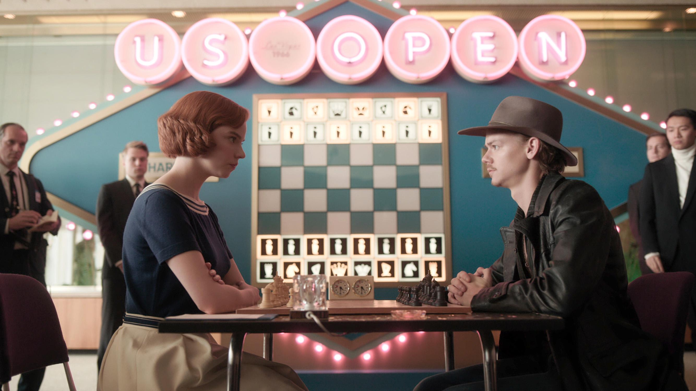

.jpg)
«Ход королевы» — невероятно красивая драма о взрослении и немного о шахматах
В главных ролях
- Аня Тейлор-Джой — Элизабет (Бет) Хармон, шахматный вундеркинд, сирота;
- Айла Джонстон — юная Бет;
- Аннабет Келли — Бет в возрасте пяти лет;
- Томас Броди-Сангстер — Бенни Уоттс, чемпион США по шахматам;
- Мариэль Хеллер — Альма Уитли, приёмная мать Бет;
- Билл Кэмп[en] — мистер Шайбел, сторож в приюте;
- Марчин Дорочиньский — Василий Боргов, советский чемпион мира по шахматам.
Смотреть Трейлер
Действительно, «Ход королевы» — тот случай, когда удачно совпало всё: захватывающий первоисточник, правильный шоураннер,
исполнительница главной роли и даже многочасовой формат.
Сериал основан на книге Уолтера Тевиса. Его больше знают как фантаста, в первую очередь благодаря роману «Человек,
который упал на Землю», по которому сняли фильм с Дэвидом Боуи.
Но «Ход королевы» — более личное произведение автора. Тевис и сам был шахматистом (оригинальное название Queen’s Gambit
логичнее перевести, как «Ферзевый гамбит» — один из популярных дебютов в шахматах, но у Netflix именно «Ход королевы»),
так что в романе он просто признавался в любви к этому виду спорта.
Сам автор подчёркивал, что не хотел в книге соответствовать историческим реалиям, поэтому изменил имена настоящих
гроссмейстеров на вымышленных. Хотя нетрудно заметить, что образ главной героини во многом явно списан с Бобби Фишера —
гениального американского шахматиста, настолько же талантливого, насколько и заносчивого.
Но в литературной версии речь шла не только о соревнованиях и карьере вундеркинда. Тевис заодно поднимал важные темы
человеческих зависимостей и феминизма.
Экранизацию популярного романа планировали чуть ли не сразу после выхода книги, но после смерти автора возникли проблемы
с правами. В девяностых над фильмом хотели поработать Бернардо Бертолуччи и Майкл Эптед, но оба забросили проект. Ближе
всех к постановке подобрался Хит Лэджер. Именно «Ход королевы» должен был стать его режиссёрским дебютом. За сценарий
отвечал Аллан Скотт («Ведьмы»), на главную роль метила Эллейн Пейдж. Однако безвременная кончина актёра разрушила и эти
планы.
Наработки Аллана Скотта подхватил Скотт Фрэнк, расширив историю с фильма до мини-сериала. Именно он сам доработал
сценарии и лично срежиссировал все эпизоды нового «Хода королевы». И это, пожалуй, идеальный автор для экранизации.
Ведь именно Фрэнк, за какой бы жанр он ни брался, умеет очень трогательно и живо рассказывать о простых человеческих
трудностях. Он написал сценарий «Логана», завершивший историю Росомахи. Он же лично создал и снял «Забытых богом» —
эмоциональный вестерн о женском городе времён Дикого Запада.
Но «Ход королевы» — его главная победа и как сценариста, и как режиссёра.
Но в литературной версии речь шла не только о соревнованиях и карьере вундеркинда. Тевис заодно поднимал важные темы
человеческих зависимостей и феминизма.
Экранизацию популярного романа планировали чуть ли не сразу после выхода книги, но после смерти автора возникли проблемы
с правами. В девяностых над фильмом хотели поработать Бернардо Бертолуччи и Майкл Эптед, но оба забросили проект. Ближе
всех к постановке подобрался Хит Лэджер. Именно «Ход королевы» должен был стать его режиссёрским дебютом. За сценарий
отвечал Аллан Скотт («Ведьмы»), на главную роль метила Эллейн Пейдж. Однако безвременная кончина актёра разрушила и эти
планы.
Наработки Аллана Скотта подхватил Скотт Фрэнк, расширив историю с фильма до мини-сериала. Именно он сам доработал
сценарии и лично срежиссировал все эпизоды нового «Хода королевы». И это, пожалуй, идеальный автор для экранизации.
Ведь именно Фрэнк, за какой бы жанр он ни брался, умеет очень трогательно и живо рассказывать о простых человеческих
трудностях. Он написал сценарий «Логана», завершивший историю Росомахи. Он же лично создал и снял «Забытых богом» —
эмоциональный вестерн о женском городе времён Дикого Запада.
Но «Ход королевы» — его главная победа и как сценариста, и как режиссёра.
Живая история без злодеев
Действие начинается в США конца пятидесятых годов. Мать юной Элизабет Хармон погибает в автомобильной аварии. Своего
отца девочка почти не знает, поэтому попадает в приют, где детям регулярно дают транквилизаторы, вызывающие привыкание.
Однажды Бет встречает уборщика, играющего в одиночку в шахматы. Девятилетняя девочка моментально изучает правила игры и
проявляет невероятные способности. Спустя несколько лет Бет забирают в приёмную семью. И вскоре героиня попадает на
первый турнир по шахматам.
Девушку сначала не считают серьёзным соперником в чисто мужском спорте. Но она тут же обыгрывает всех соперников и
начинает стремительный взлёт. Вот только Бет никак не может побороть зависимость от таблеток, а постепенно слишком
увлекается и алкоголем, которым злоупотребляет её приёмная мать.
На первый взгляд может показаться, что сериал выглядит максимально клишированным набором актуальных тем: трудная жизнь
сирот, снисходительное отношение к женщинам, а в довесок ещё и зависимость детей и подростков от препаратов —
болезненный вопрос для США и по сей день.
Вот только дело в том, что Фрэнк подаёт все эти идеи в строго дозированных порциях и не перегибая с плакатностью (разве
что в финале начинает выдавать совсем уж лобовые лозунги). Приют, в котором растёт Бет — не типичная киношная обитель
жестокости. Да, не обходится без традиционной сцены, где новенькая с подносом выискивает себе место в столовой. Но не
будет каких-либо издёвок ни от воспитателей, ни от сверстников. Мало того, даже с темой таблеток не видно какого-то
злого умысла: подход к медицине меняется — и их тут же перестают выдавать.
То же самое будет прослеживаться и в остальном сюжете сериала. Попав в «мужской» мир, Бет не столкнётся с жестоким
сексизмом, будут лишь неприятные акценты: вместо таланта шахматистки в журналах предпочитают обсуждать её внешность. Но
в итоге ей ни разу не откажут в участии и не будут притеснять из-за пола или статуса.
С соревновательной частью в сериале вообще всё очень радужно, почти идеалистически. Соперники Бет могут казаться
нагловатыми или, наоборот, зловещими машинами. Но всё это останется лишь в рамках турниров и противостояния на доске. Ей
никто не будет строить козни или подсыпать яд. Наоборот, за редким исключением (скорее эмоциональным, чем агрессивным),
все относятся к её победам с большим уважением.
То есть шахматы в «Ходе королевы» — тот идеальный спорт, которого так не хватает в реальности. С уважающими друг друга
соперниками, готовыми признать талант оппонента, искренне восторгаться игрой и даже давать советы по дальнейшей
деятельности.
А вот с жизнью вне доски дела обстоят хуже. Но, опять же, Скотт Фрэнк не пытается показать какое-то глобальное зло. И,
возможно, отсутствие конкретных антагонистов и есть самая трогательная часть истории. Бет не со зла давали таблетки, да
и мачеха хотела лучшего, просто не смогла справиться со своими травмами. И даже мир, где к женщинам относятся как к
низшей касте, не какой-то жестокий, просто всё так сложилось, и никто не пытался это изменить. Физическое и особенно
ментальное здоровье героини рушит лишь сочетание этих факторов, а ещё больше — собственное поведение.
По сути, она сама выглядит главной злодейкой истории: человеком, который просто не может жить как все и не в состоянии
справиться со своими демонами. Кроме неё подлости совершает лишь отчим, да и то он скорее жалок, чем страшен. Да,
мелькнут пару раз агенты КГБ. Но им дадут очень мало времени и ни одной возможности как-то реально повлиять на события.
Красивая драма взросления
Конечно, может возникнуть вопрос: раз в этой истории вроде бы нет какого-то настоящего конфликта, чем она вообще
цепляет? Вряд ли интересно просто шесть часов наблюдать за игрой в шахматы, даже если за доской сидит Аня Тейлор-Джой.
Но именно тут и выходят на первый план два главных достоинства Скотта Фрэнка: первое вполне известное, а вот второе —
довольно неожиданное.
Этот сценарист отлично умеет раскрывать перемены в людях и рассказывать о взаимоотношениях совершенно разных героев.
Достаточно вспомнить хоть «Вне поля зрения», принёсший сценаристу номинацию на «Оскар».
«Ход королевы» отлично показывает жизнь талантливого подростка и его поиски своего места: от первого восторга до
снисходительного отношения к окружающим, от выбора между расчётом и эмоциями до парализующего страха после первого
провала.
И ровно то же самое с общением героини с людьми: Бет находит друзей, влюбляется, теряет близких, борется с зависимостью
и пытается обустроить свою жизнь. То есть, если исключить шахматную часть, «Ход королевы» — типичная и очень удачная
coming-of-age драма, достойная какой-нибудь Греты Гервиг.
Недаром к финалу главная героиня встречает многих старых знакомых, и все они бросили детское увлечение, найдя себя на
другом поприще. Лишь единицы действительно одержимы каким-либо спортом, наукой или искусством (а в шахматах есть все три
эти составляющие), а потому остаются с ним навсегда.
Так что не стоит ждать непредсказуемого сюжета: эта история не о внезапных поворотах судьбы, а просто о взрослении.
Нетрудно догадаться даже не только чем закончится сериал, но и какой именно приём поможет Бет.
По этой же причине к финалу всё же появляются излишне прямые заявления: про взаимовыручку, про препараты, про свободу
женщин. Жанр должен оправдывать себя и давать какие-то моральные установки.
Но вряд ли у кого получится всерьёз к этому придраться. И не только потому, что вся мораль подана строго дозировано и
адекватно. Просто всё внимание перетягивает невероятной красоты визуальный ряд, дополненный отличным саундтреком. И это
та часть, которую от Скотта Фрэнка-режиссёра вряд ли кто ждал.

**********
Скотт Фрэнк подошёл к постановке максимально ответственно. Памятуя, как знатоки разнесли фильм «Жертвуя пешкой» за плохо
поставленные партии, он взял в консультанты Брюса Пандольфини и Гарри Каспарова и заставил всех актёров реально играть в
шахматы, правильно двигать фигуры и даже на кнопку часов нажимать так, как это делают в реальных матчах. Но всё равно
сделал сериал не о спорте, а о жизни и трудностях взросления.
Именно поэтому формат из семи эпизодов для проекта идеален: Фрэнк снимает именно фильм, поэтому в первом эпизоде сама
Аня Тейлор-Джой почти не появляется. Но картина на два часа, скорее всего, просто превратилась бы в банальную историю о
победе над сильным соперником. А за семь эпизодов зрителям показывают неспешную изящную драму, которая трогательно
раскрывает жизни талантливых, но замкнутых и немного аутичных людей.